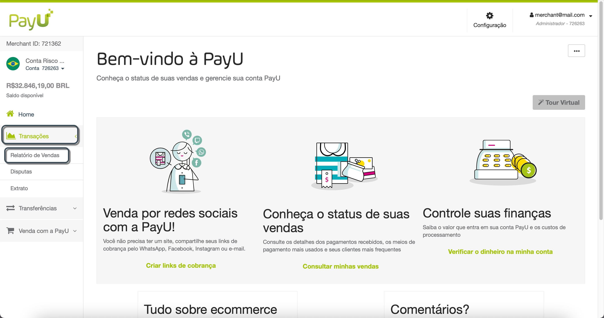
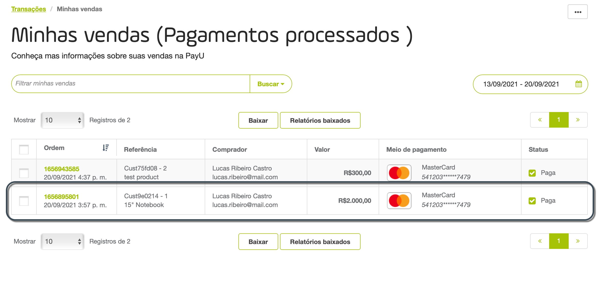
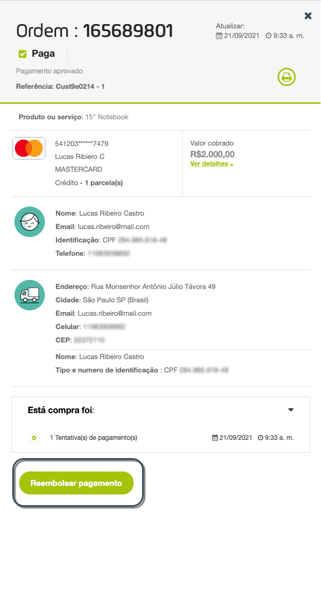
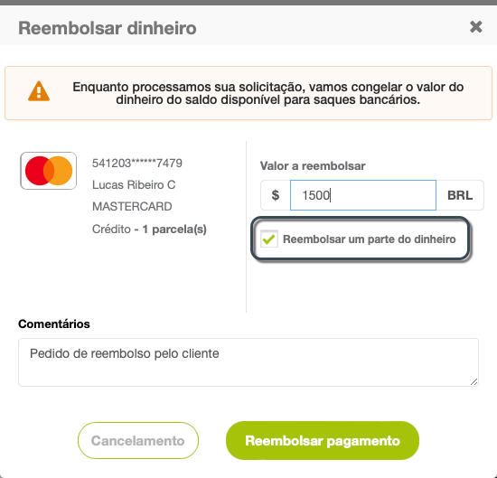
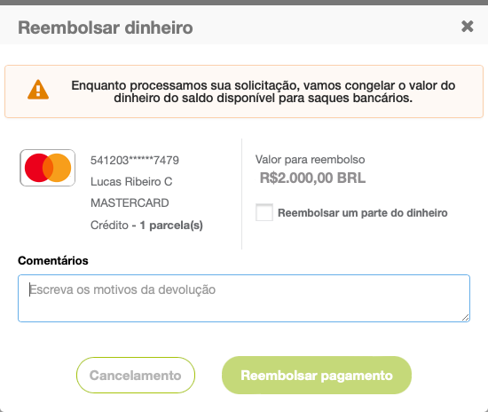
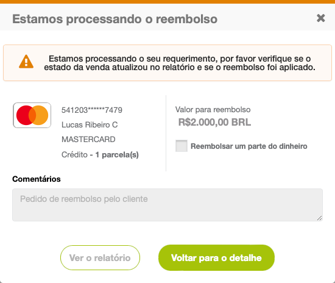
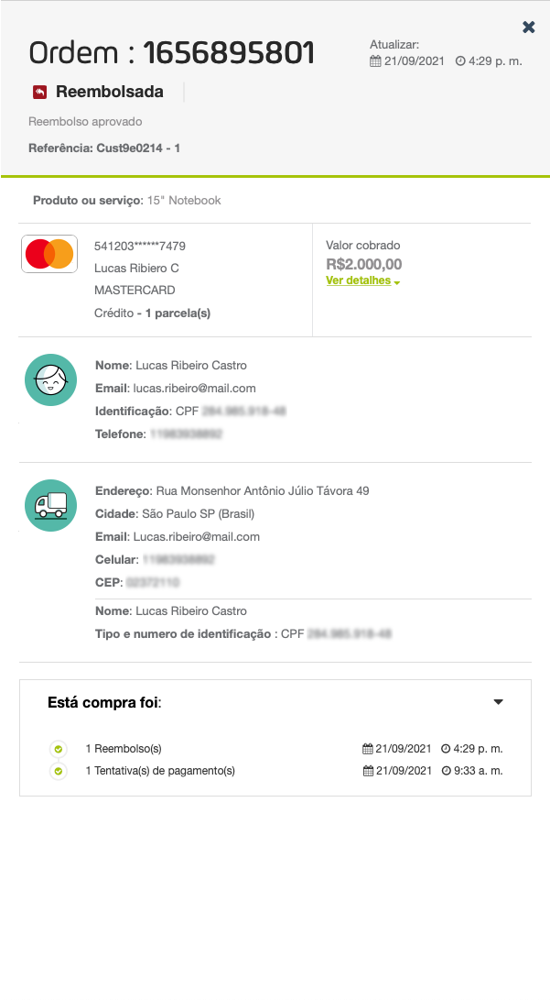

Reembolsos
Observação
Se você fizer um reembolso por este painel, ele só será atualizado no Módulo PayU. Se precisar controlar e registrar os reembolsos em seu sistema de reembolsos, você deve usar a API de reembolsos.O que é um reembolso?
Um reembolso é a ação de devolver voluntariamente o dinheiro pago por um cliente quando qualquer uma das seguintes situações acontecer:
- O produto ou serviço entregue não atendeu às expectativas do cliente e ele o devolveu.
- O produto está esgotado e o lojista não consegue entregar o produto ao cliente.
Procedimento de reembolso
Reembolsos estão sujeitos a análise e aprovação de nossa equipe. O procedimento para solicitar reembolsos é explicado abaixo:
-
Quando um reembolso é solicitado por seu cliente, você precisa solicitá-lo usando o módulo PayU. Você só precisa identificar a ordem e fornecer um motivo para o reembolso.
-
Depois de enviar a solicitação, PayU a analisa e ela é aprovada ou rejeitada em 1 a 3 dias úteis.
Estados de reembolso
Um reembolso pode estar em um dos três estados a seguir:
- Em devolução: a solicitação foi enviada a PayU para aprovação e está em aprovação.
- Aprovada: a solicitação foi aprovada por um agente de atendimento ao cliente do PayU.
- Recusada: a solicitação não atende às políticas definidas pelo PayU e foi rejeitada por um agente.
Permissão necessária
Para ter acesso a este módulo, você precisa ter um perfil com a seguinte permissão habilitada:
- Reembolsos e chargeback > Listar Reembolsos
- Reembolsos e chargeback > Gerenciar Reembolsos
Esta permissão autoriza que você faça reembolsos.
Consulte Perfis e permissões para obter mais informações.
Observações
- Reembolsos estão disponíveis apenas para transações pagas com cartão.
- Você pode tentar novamente a ordem de reembolso se ele foi recusado anteriormente.
- Assim que você faz a solicitação, o valor da transação passa a fazer parte do Saldo Congelado de sua conta PayU até que seja processado.
- No Chile:
- Reembolsos para transações processadas por WebPay Plus não estão disponíveis.
- Para transações com cartões pré-pagos não processadas pelo WebPay Plus, os reembolsos solicitados na primeira hora após a cobrança podem ser aprovados ou rejeitados pela rede financeira. Após a primeira hora, todos os reembolsos de transações com cartões pré-pagos são rejeitados.
- Se o reembolso for rejeitado, o PayU mostra o código de erro gerado pela rede.
- Reembolsos parciais para transações parceladas são recebidos online, mas PayU os processa manualmente devido a restrições do adquirente.
- Na Colômbia, reembolsos parciais não estão disponíveis para cartões de crédito internacionais.
- No Peru, reembolsos parciais são aceitos para transações sem prestações. Lembre-se de que as transações com uma parcela são consideradas sem parcelas. Reembolsos parciais com visanet devem ser enviados após um dia.
- Se sua solicitação de reembolso for aprovada, o valor será devolvido ao titular do cartão.
- Se sua solicitação de reembolso for recusada, o valor será liberado do Saldo Congelado e retornará ao Saldo Disponível em sua conta PayU.
- Assim que o reembolso for aprovado, isso será refletido no cartão de crédito do pagador quando o banco o efetivar.
- Para verificar o status da sua solicitação de reembolso, você pode consultá-lo clicando na venda no Painel do comércio.
Reembolsos por país
Observe as seguintes considerações por país antes de solicitar reembolsos.
| Houa de enviar o reembolso | Valou mínimo | Quanto tempo o cliente levará para receber o dinheiro de volta? | Aceita reembolsos parciais? | |||
|---|---|---|---|---|---|---|
| Mín. | Máx. | Mín. | Máx. | |||
 |
10 minutos |
|
- | 1 dia útil | 30 dias úteis | ✓ |
 |
|
90 ou 120 dias* | - | 1 dia útil | 15 dias úteis | ✓ |
 |
10 minutos | 90 dias | 10 CLP | 8 dias úteis | 20 dias úteis | ✓ |
 |
10 minutos | 2 anos | 100 COP | 1 dia útil | 30 dias úteis | ✓ |
 |
10 minutos | 45 ou 180 dias* | - | 1 dia útil | 30 dias úteis | ✓ |
 |
10 minutos | 180 dias | - | 1 dia útil | 8 dias úteis | X |
 |
10 minutos | 180 dias |
|
15 dias úteis | 25 dias úteis | ✓ |
Como solicitar um reembolso?
Para solicitar um reembolso, a transação deve ser aprovada e sem nenhum processo de disputa pendente. Siga as próximas etapas para solicitar.
- Faça login em sua conta PayU. No menu esquerdo, expanda o menu Transações e selecione Relatório de Vendas.

- O Relatório de Vendas abrirá. Localize a transação que deseja reembolsar e clique nela.

- Os detalhes da transação aparecem à direita da tela. Clique no botão Reembolsar pagamento no final do painel.

- Se você precisar solicitar um reembolso parcial, marque a opção Reembolsar um parte do dinheiro e forneça o valor solicitado.

- Forneça o motivo para solicitar o reembolso (parcial ou total) e clique em Reembolso.

- O resumo da solicitação aparecerá. Enquanto PayU processa o reembolso, o valor do reembolso fica congelado em sua conta. Se a solicitação for aprovada, o valor reembolsado será devolvido ao cliente pelo meio de pagamento utilizado.

- Assim que a solicitação for aprovada, o status aparecerá na venda.
